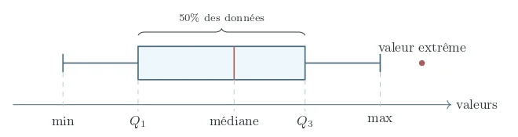

Comptabilité
Σ débit = Σ crédit
HECPro transforme les 7 matières du premier semestre en un parcours clair : tu comprends plus vite, tu sais quoi maîtriser.
Les 7 matières :
Pas forcément parce qu’ils ne travaillent pas, mais parce qu’à HEC, les cours s’enchaînent vite, les notions s’accumulent et il devient facile de perdre du temps sans savoir ce qui compte vraiment.
HECPro te donne une direction dès le début. Tu comprends mieux tes cours pendant le semestre, tu sais ce que tu dois maîtriser et tu arrives aux examens avec une préparation déjà construite.
Un aperçu concret de ce qui t’attend : claire, structurée et pensée pour aller directement à l’essentiel.
Statistiques, séries 1 et 2. Huit pages, du vocabulaire de base jusqu’à ce que l’examen demande.
Chaque fiche commence par ce que l’examen teste vraiment.
Les notions sont classées et reliées, pas empilées.
Le sens derrière la formule, pour comprendre au lieu d’apprendre par cœur.
Les pièges classiques sont signalés avant l’examen, pas après.
Les formules à retenir, encadrées, avec un exemple chiffré.
Chaque matière : un guide pour comprendre son fonctionnement et ses attentes, puis des fiches qui reprennent les cours au fil du semestre.
Σ débit = Σ crédit
plancher social, plafond écologique
sum(x) / len(x)
planifier, organiser, diriger, contrôler
f′(x0) = limh→0 f(x0 + h) − f(x0)h
ε = %ΔQ%ΔP
x̄ = 1n Σ xi

Voir la ficheTu es ici · semaine
Tu sors du cours, tu ouvres HECPro et tu remets rapidement les choses au clair.
Semaines 1 à 14 DécouvertePlus besoin de chercher, trier et reconstruire tes propres supports. L’essentiel est déjà structuré pour toi.
Tout le semestre Découverte et EliteRésumés, QCM, exercices, anciens examens et corrections vidéo : tu ne repars pas de zéro.
De la semaine 9 à la session ElitePour comprendre tes cours, prendre tes repères et arrêter d’avancer dans le flou, le Pack Découverte est fait pour ça.
Pour disposer de tout le matériel et travailler la matière jusqu’aux examens, le Pack Elite regroupe l’expérience HECPro complète.
89 CHF
Le point de départ pour comprendre HEC Lausanne, prendre tes repères et ne plus subir tes premiers cours.
Le plus choisi
250 CHF
La préparation complète pour maîtriser les 7 matières, gagner du temps et arriver aux examens prêt à performer.
Tout le Pack Découverte, plus :
Accès immédiat après paiement. Carte ou PayPal, Twint sur demande. Satisfait ou remboursé pendant 24 h. Déjà plus de 150 étudiants HEC.
Un cours que tu ne comprends pas, un exercice qui bloque ou un examen à préparer ? Réserve une séance individuelle avec un assistant HECPro.
Séance individuelle60 minutes
45 CHF
Réserver sur WhatsApp« J’avais pas mal de retard en décembre et HECPro m’a permis de voir directement quoi prioriser pour les examens. »
« Les supports sont clairs et vont droit au but. Pas besoin de passer des heures à chercher quoi réviser. »
« […] Ce n’est pas juste des résumés. Tu as aussi des QCM, des conseils et une vraie méthode pour bosser plus intelligemment. »
« Au début j’hésitais un peu à prendre HECPro, surtout pour le prix. Mais en vrai, ça m’a bien aidé. »
« J’ai pris le pack juste avant les révisions et ça m’a surtout évité de perdre du temps à chercher quoi travailler. »
« J’ai beaucoup aimé travailler avec HECPro, ça m’a fait gagner énormément de temps. »
Une autre question ? Écris-nous sur WhatsApp
Si tu viens de commencer HEC et que tu veux surtout comprendre tes cours, prendre tes repères et arrêter d’avancer dans le flou, le Pack Découverte est fait pour ça.
Si tu veux aller plus loin et disposer de tout le matériel pour travailler la matière jusqu’aux examens, le Pack Elite regroupe l’expérience HECPro complète.
Tu retrouves les 7 matières du premier semestre, chacune avec un guide pour comprendre la matière, son fonctionnement et ses attentes, puis des fiches qui reprennent les cours au fil du semestre. L’idée est simple : tu sors du cours, tu ouvres HECPro et tu remets rapidement les choses au clair.
Le Pack Elite contient tout le Pack Découverte, puis ajoute les ressources pensées pour aller chercher les résultats : résumés, QCM, exercices, anciens examens, corrections vidéo d’examens par des assistants et guides ciblés examen. Tu ne repars pas de zéro au moment des révisions : ton semestre est déjà construit.
Oui. HECPro n’est pas seulement fait pour les étudiants perdus. Même si tu comprends déjà bien tes cours, tu peux gagner énormément de temps en évitant de chercher, trier, résumer et reconstruire toi-même tout ce dont tu as besoin. Avec HECPro, l’essentiel est déjà structuré : tu vas plus vite et tu te concentres directement sur ce qui compte.
Parce que les révisions sont beaucoup plus simples lorsque tu n’as pas un semestre entier à reconstruire. Utiliser HECPro dès les premières semaines te permet de comprendre au fur et à mesure, de garder une vision claire des matières et d’arriver à la période d’examens avec des bases déjà solides.
Non, et ce n’est pas le but. HECPro est conçu pour rendre tes cours beaucoup plus exploitables. Tu suis le cours, puis tu disposes d’un support clair pour comprendre, remettre les notions dans l’ordre et savoir ce qu’il faut réellement retenir et maîtriser.
Les documents du cours contiennent la matière. HECPro est construit pour te permettre de l’utiliser efficacement. Les contenus sont organisés pour comprendre les notions, gagner du temps et, avec Elite, passer progressivement de la compréhension à l’entraînement puis aux examens.
Oui. HECPro est construit spécifiquement autour des 7 matières du premier semestre de première année à HEC Lausanne. Ce n’est pas une plateforme généraliste : les supports suivent les matières, les contenus et les exigences auxquelles tu es réellement confronté pendant ton année.
Dès ton achat, tu accèdes à ton espace HECPro et aux ressources comprises dans ton pack. Pas d’attente : tu peux commencer à utiliser le matériel immédiatement.
Tu as 24 heures pour découvrir HECPro. Si le contenu ne te convient pas, tu peux demander ton remboursement selon les conditions prévues.
7 matières, un cadre clair dès les premières semaines pour comprendre tes cours, savoir où tu vas et ne pas laisser le flou s’installer.
Choisir mon pack